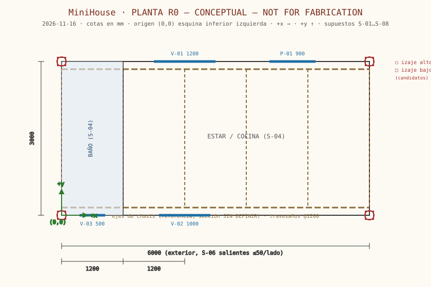
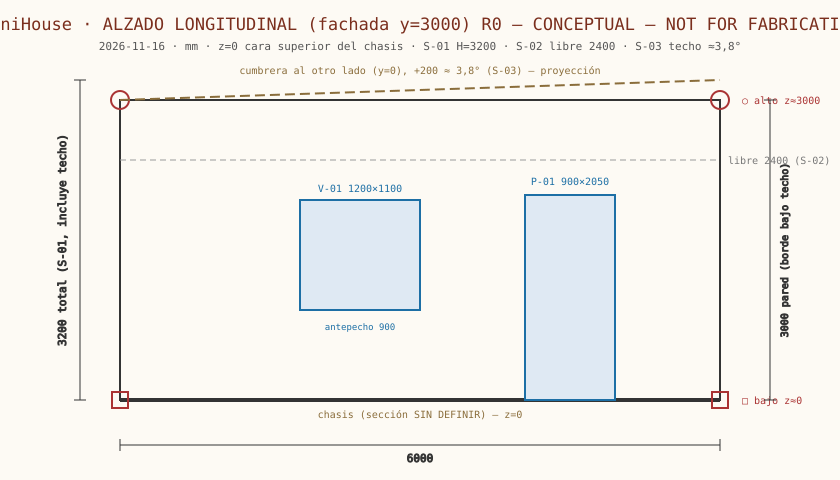
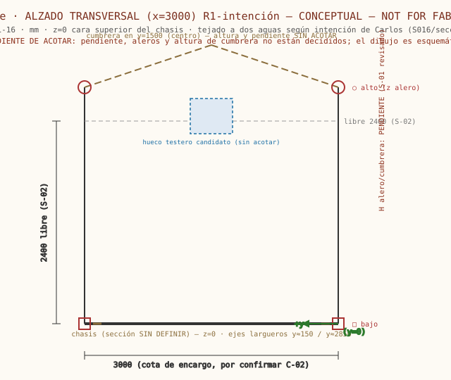

Diseño · geometría de referencia R0
CONCEPTUAL Revisión R0 del 2026-11-16. Las cotas salen de supuestos de trabajo declarados, no de un diseño aprobado. Cambiarán cuando el propietario responda las preguntas abiertas.
Volumen
| Magnitud | Valor R0 | Origen |
|---|---|---|
| Planta exterior | 6000 × 3000 mm | Encargo del proyecto (aproximado, por confirmar) |
| Altura total sobre chasis | 3200 mm (por revisar) | Supuesto S-01; la nueva forma de techo obliga a revisarlo |
| Altura libre interior | 2400 mm | Supuesto S-02 |
| Techo | A dos aguas, chapa metálica oscura; pendiente sin acotar | Intención declarada por el propietario el 2026-11-16 (sustituye al monopendiente S-03) |
| Salientes de envolvente | ≤ 50 mm/lado | Supuesto S-06 → ancho de transporte ≤ 3100 mm |
Fuente: registro de decisiones y geometría R0 del proyecto, 2026-11-16. Origen de coordenadas: esquina exterior del chasis, cara superior; +x longitudinal, +y transversal, +z arriba.
Planos



Aberturas
| Id | Descripción | Ancho × alto (mm) | Fachada |
|---|---|---|---|
| P-01 | Puerta de entrada | 900 × 2050 | y=3000 |
| V-01 | Ventana del estar | 1200 × 1100 | y=3000 |
| V-02 | Ventana de cocina | 1000 × 900 | y=0 |
| V-03 | Ventana de baño | 500 × 500 | y=0 |
Madera recuperada
Uso previsto: revestimiento y acabado desmontable, nunca estructura sin documentación (especie, humedad, defectos, grado, conexiones). Cada lote llevará ficha de trazabilidad antes de instalarse. La envolvente se plantea como pantalla ventilada con barrera de vapor en el lado caliente, coherente con los requisitos TEK17 recuperados de la fuente oficial.
Fuente: brief arquitectónico del proyecto y fichas TEK17 §13-13/§14 (DIBK), consultadas 2026-11-16.